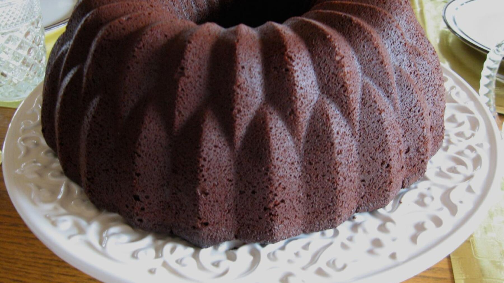

Zurück zur Übersicht
Keksreste-Kuchen
Verwertet übrig gebliebene Weihnachtskekse, Schokolade und Trockenfrüchte: Die Brösel werden in Milch und Eierlikör eingeweicht und mit einem Kakaoteig gebacken. Eine Portion entspricht einem Stück.
- Zeit
- 1 Std. 15 Min.
- Schwierigkeit
- leicht
- Kategorie
- Süßgebäck
- Ernährung
- vegetarisch
Zutaten
Portionen
- 400 gWeihnachtskekse
- 200 mlMilch, lauwarm
- 50 mlEierlikör, Baileys oder Milch, lauwarm
- 40 gKristallzucker
- 1 PackungVanillezucker
- 2Eier
- 80 gMehl
- 1 PackungBackpulver
- 20 gBackkakao
- Butter und Mehl für die Form
Zubereitung
- Die Kekse zerbröseln: Dafür in einen Gefrierbeutel geben und mit dem Nudelholz darüberrollen, bis Brösel entstanden sind. Alternativ im Mixer zerkleinern.
- Die lauwarme Milch und den lauwarmen Eierlikör zu den Keksbröseln geben und 15 Minuten stehen lassen.
- Eine Kuchenform (1,5 Liter Fassungsvermögen) fetten und mit Mehl ausstäuben. Den Backofen auf 180 °C Ober-/Unterhitze vorheizen.
- Die Eier mit dem Zucker und dem Vanillezucker schaumig schlagen. Mehl, Backpulver und Backkakao dazugeben.
- Die Keksbröselmischung noch einmal gut durchmixen und zu den restlichen Zutaten geben.
- Den Teig gleichmäßig in der Form verteilen und etwa 45 Minuten backen. Stäbchenprobe machen.
- Den Kuchen 10 Minuten in der Form abkühlen lassen, dann auf ein Gitter stürzen und vollständig auskühlen lassen.